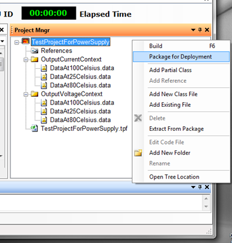
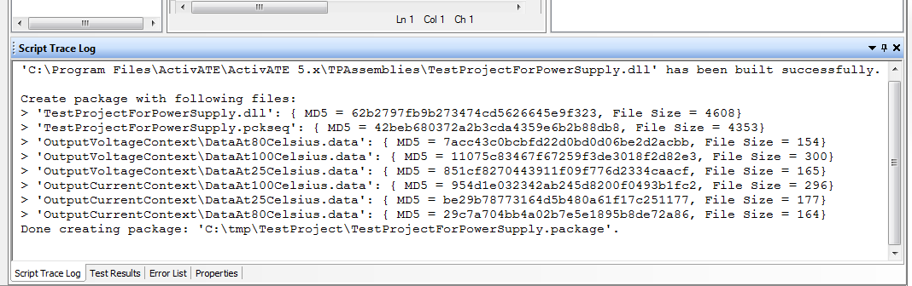
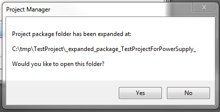
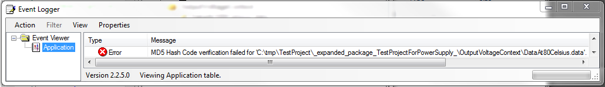

For package creation, the following context menu commands (applied on the root of ActivATE Project Manager root) are relevant:

Package for Deployment command
ActivATE shows in its Script Trace Log toolbar the files included in the package, along with their MD5 Hash Codes and file sizes. (If ActivATE Script Trace Log toolbar is not visible, it must be enabled from View pull-down menu.)
The MD5 codes are saved in _md5_hash_values_in_package.xml, which is a file added to the package behind the scene. Its role is to provide the MD5 Hash Codes for each project file at unpacking time in order to validate the correctness of that operation.

Extract from Package command
This command expands a previously created Package file. When operation completed, the user may choose to inspect the extracted folder:

MD5 Hash Code verification errors are always reported in ActivATE Event Logger form, like below:

Other links:
Introduction Data Files In Project Package Usage
Astronics Test Systems
Last updated on 2/27/16 I. Zolog